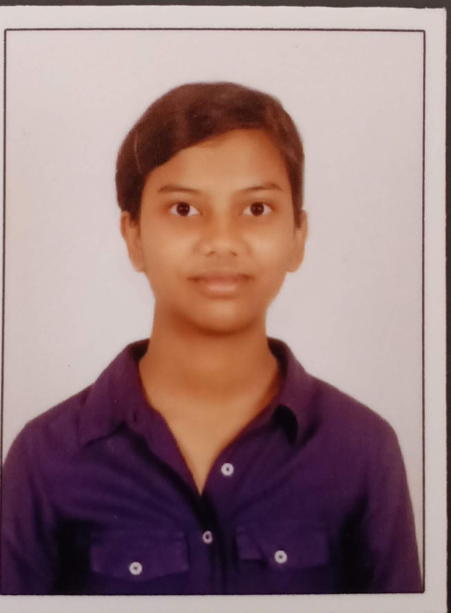

Aditi Kumar

EDUCATION
National Institute of Technology,Karnataka
B.Tech in Civil Engineering(CGPA-7.7)
Lal Bahadur Shastri Senior Secondary School
Grade 12 - 86%
Anubhuti School
Grade 10 - 92.4%
SKILLS
- Programming Languages(C++)
- Data Structures and Algorithms Problem Solving
- Autodesk Revit
- Front End Web Development(HTML,CSS)
- Miscellaneous Skills-Microsoft Powerpoint,Microsoft Word
EXTRACURRICULAR SKILLS
- NCC Cadet- B Certificate Holder
- Headed and leaded various activities organized by NCC
- Cleared UPSC NDA-NA SSB Interview(AIR 236) and recommended for Officer Entry in Indian Army
SOFT SKILLS
- Leadership
- Communication Skills
- Time Management
- Teamwork
- Disciplined
PROJECTS
THE INSTITUTION OF ENGINEERS,NITK CHAPTER
IE NITK aims to enhance the technical expertise of its members and the student community while acknowledging the importance of fine arts and social work.
HOSTED AND COORDINATED CLUB EVENTS SUCH AS IE ENIGMA
Enigma is IE's flagship event where freshers experiment in different fields of engineering and arts. Each SIG
conducts stimulating competitions where my SIG conducted Auxesis where participants were tested on their
civil knowledge and problem-solving skills.
BUILDING INFORMATION AND MODELLING
BIM is a modeling technology and associated set of processes to produce,communicate,and analyze building
models.It is used for designing and increasing the efficiency of the project by improving collaboration between
different stakeholders throughout the project life cycle and producing a central model. It is done by modeling
building elements, implementing interiors and circulation,views and visualization using Autodesk Revit.
SUMMER MENTORSHIP PROGRAM ON OPTIMIZATION OF TRAFFIC CONTROL SYSTEM USING DATA STRUCTURES AND ALGORITHMS
A traffic control system can be achieved by optimizing traffic flow and reducing congestion using various DSA
techniques. The objective is to develop a software solution that can optimize the flow of traffic and use DSA to
model and analyze traffic patterns and make real-time adjustments to traffic signals and routes based on
current conditions.